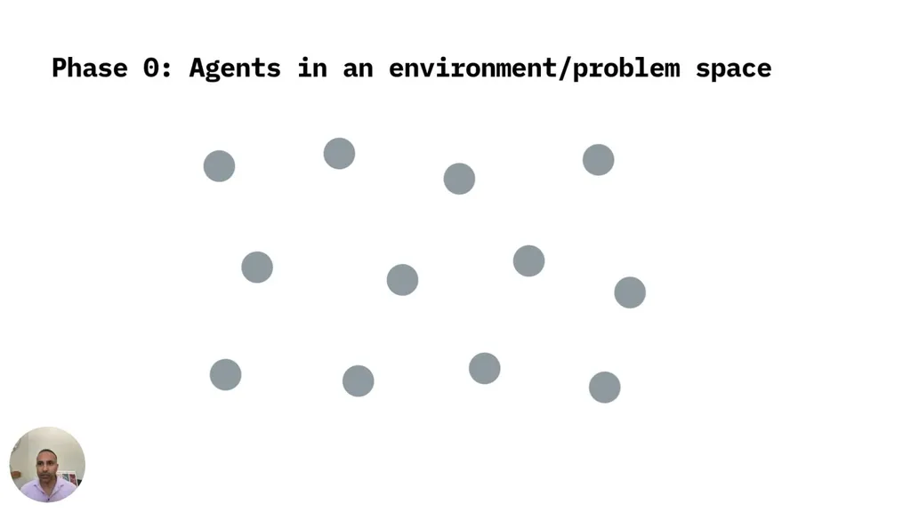
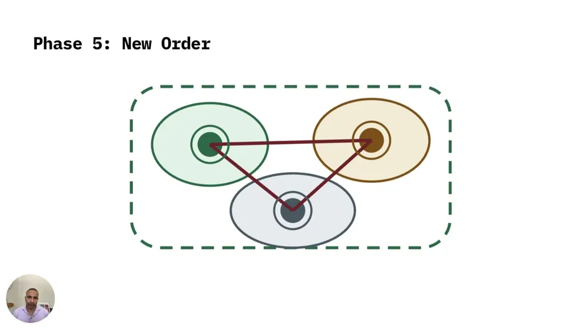

The talk describes current AI engineering as building or configuring a fixed harness -- system prompts, agents.md/Claude.md files, tool calling, role assignment -- entirely before runtime, likened to a factory assembly line where each agent has one job and a fixed sequence. This buys reliability, auditability, and predictable behavior, but the speaker argues that reliability is bought by suppressing the variance novelty requires.
“This is like a factory line though. Like think Taylorism for AI.”
▶ watch at 07:41“the factory method is the right answer to a fixed problem and the wrong answer to a moving problem.”
▶ watch at 10:18
As AI moves from screen-bound software tasks into real-world, multi-agent, multi-human, cross-institutional settings that touch the physical world, the speaker argues a fixed harness becomes brittle because the environment is dynamic and constantly changing in ways that can't be anticipated in advance.
“The real world is dynamic and messy. You know, it's full of multi-agent, multi-human, cross-institutional, and really touching the physical world, which means that a fixed harness is quite brittle.”
▶ watch at 02:02The talk distinguishes complicated systems (like a jumbo jet), whose parts can be studied, planned, and predicted, from complex systems (like a flock of birds, a market, or a human organization), whose interacting, adapting parts can't be understood by analyzing them separately. The speaker calls treating a complex problem as if it were complicated one of the most expensive mistakes in modern design and engineering.
“a complicated system or complicated problem is like building a jumbo jet or a clock.”
▶ watch at 16:02“this is probably one of the most expensive mistakes we make in the modern world of design and engineering, which is that we treat a complex problem like a complicated one”
▶ watch at 16:32Adaptive engineering is defined as designing constraints so that a harness emerges on its own, stabilizes, and adapts mid-runtime in response to a changing environment, in ways the engineer could not specify in advance -- the harness becomes an ongoing output of agent interaction rather than a predetermined input.
“adaptive engineering is the discipline of designing constraints to the extent that the harness emerges on its own, stabilizes, and adapts as needed in response to the changing environment”
▶ watch at 21:46The speaker names risks of adaptive systems: emergence can settle into a locally stable but suboptimal 'attractor' without genuine selection pressure, agents trained on similar data risk converging into a monoculture rather than genuine diversity, and legibility collapses as adaptability increases. He predicts that as models keep improving, the limiting factor for AI engineering will shift from model strength to harness adaptability.
“the limiting factor which is the case now, but probably more so in the future, is not going to be the strength of the model. It's going to be the adaptability of the harness.”
▶ watch at 35:54“There is a risk of monoculture, where you don't get genuine diversity amongst agents because they're all trained on the same data.”
▶ watch at 33:49
The talk stays at the level of design philosophy and simulated dynamics (birds, water, agent-coupling diagrams) rather than a working adaptive-engineering system, so the claims here read as a research agenda and forecast rather than a demonstrated result (ours).
| Stance | Claim | t |
|---|---|---|
| asserts | A fixed harness resembles a factory assembly line, with each agent having a fixed role, place, and sequence engineered in advance. | 07:41 |
| warns | A fixed harness is well suited to fixed, predictable problems but is the wrong approach for a constantly changing problem. | 10:18 |
| asserts | The real world is dynamic, multi-agent, multi-human, and cross-institutional, which makes fixed harnesses brittle. | 02:02 |
| asserts | Adaptive engineering is the discipline of designing constraints so the harness emerges and adapts on its own at runtime. | 21:46 |
| asserts | A complicated system, like a jumbo jet or clock, has parts that can be taken apart, analyzed, and predicted. | 16:02 |
| warns | Treating a complex problem, whose interacting parts adapt to one another, as though it were a complicated one is one of the most expensive mistakes in modern design and engineering. | 16:32 |
| predicts | The limiting factor for AI engineering will shift from the strength of the model to the adaptability of the harness. | 35:54 |
| warns | Adaptive multi-agent systems risk monoculture because agents trained on the same data may fail to develop genuine diversity. | 33:49 |
Machine-readable copy embedded in this page (script#ontology) and in the corpus ontology.